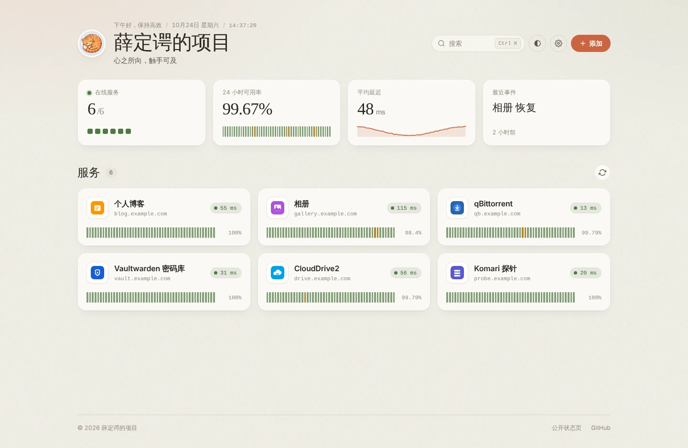
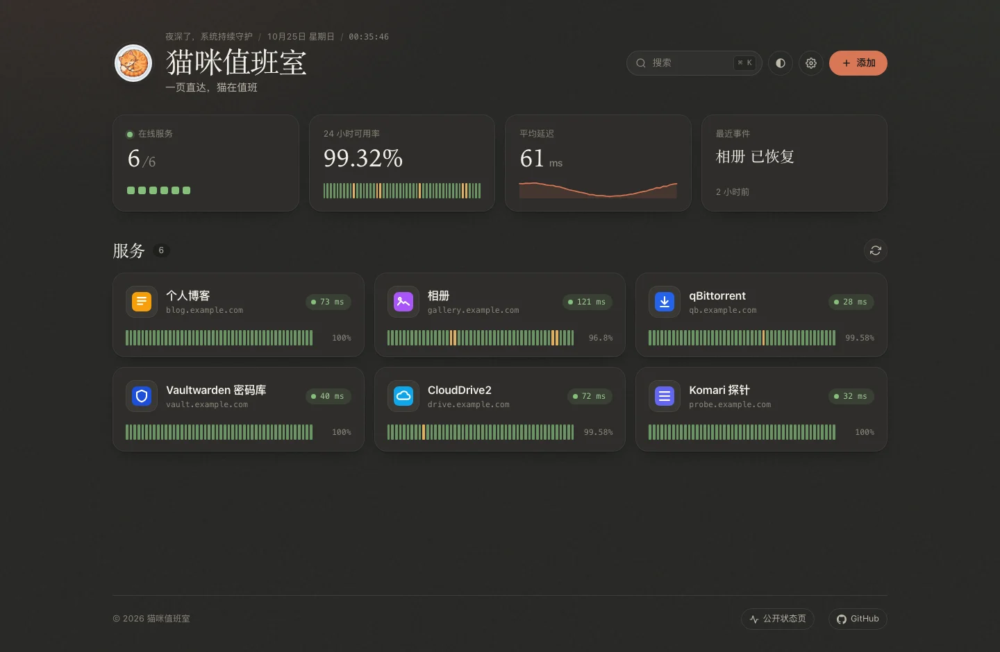
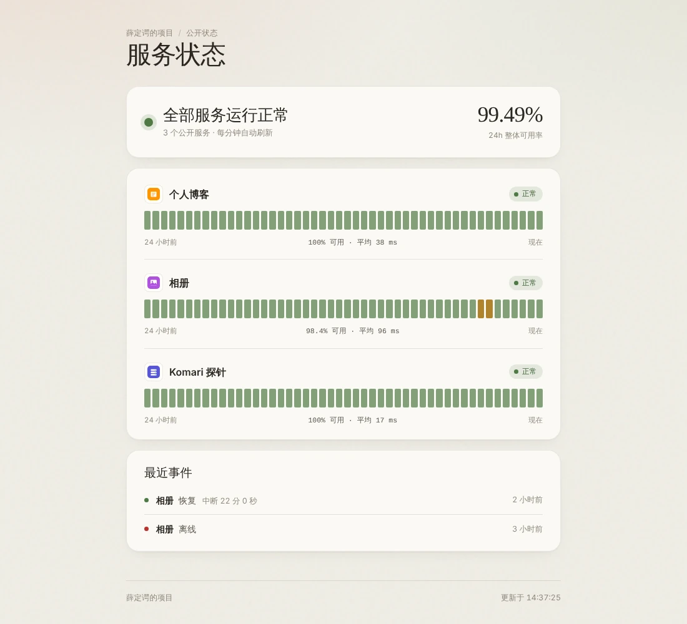

文档与教程 · DOCUMENTATION
服务摆一页，猫来值班
猫咪值班室（CatWatch）是一个轻量的个人服务器导航页：把常用服务聚合成一页，同时由服务端持续探测、记录 24 小时可用率，谁掉线了就喊你，还能生成一个只读的公开状态页分享给朋友。



01功能一览
导航
服务卡片自动获取图标；Ctrl + K / ⌘ K 搜索、键盘直达；首屏由服务端预渲染，打开就是齐的。
监控
后台每 12 秒探测一次；每个服务显示 24 小时可用率条（48 段 × 30 分钟）和延迟；历史保留 7 天。
通知
连续 3 次失败才判定离线，恢复时附中断时长；支持 Telegram、Bark、Server酱、通用 Webhook。
公开状态页
/status 只展示你勾选公开的服务：名称、状态、可用率和事件，不暴露任何地址。
多设备同步
设置 ADMIN_TOKEN 后，页面上的增删改直接写回服务器，所有设备看到同一份列表。
图标
服务端读取服务页面声明的图标并缓存，同源加载；也可以手动指定；拿不到时显示首字母头像。
02Docker 部署（推荐）
一个容器搞定：Node.js + Vite + 原生 JavaScript，数据都是文件——服务列表是 config/projects.json，历史和图标缓存在 data/ 目录。
- 建目录，给写权限
容器内以 node 用户（uid 1000）运行，挂载的目录需要它能写。
- 一条命令跑起来
把
ADMIN_TOKEN换成你的随机口令（可用openssl rand -hex 24生成）。设了它，页面上的修改才能写回服务器、多设备同步。 - 打开页面，加服务
访问
http://你的服务器IP:3000，点右上角「添加」，第一次保存时输入管理口令；几秒后图标和在线状态就出现了。
mkdir -p catwatch/config catwatch/data && cd catwatch sudo chown -R 1000:1000 config data docker run -d \ --name catwatch \ --restart unless-stopped \ -p 3000:3000 \ -e ADMIN_TOKEN=你的随机口令 \ -v "$PWD/config:/app/config" \ -v "$PWD/data:/app/data" \ ghcr.io/uncat2310/catwatch:latest
不设置 ADMIN_TOKEN 同样能跑，只是页面上的修改只保存在当前浏览器（见 两种编辑模式）。
03Compose 与 Node 部署
Docker Compose
git clone https://github.com/uncat2310/catwatch.git cd catwatch docker compose up -d
docker-compose.yml 里的 ADMIN_TOKEN、通知变量和 volumes 默认是注释掉的，按需取消注释即可。文件同时声明了 image 与 build：默认拉取 GHCR 镜像，也可以 docker compose build 自己构建。
Node.js 直接跑
要求 Node.js 18+。
npm ci npm run build ADMIN_TOKEN=你的随机口令 npm start
常驻运行可以用 PM2（pm2 start server.js --name catwatch 后 pm2 save），或写一个 systemd 单元——完整示例见仓库 README。生产环境建议用独立的非 root 用户运行，并把口令放在权限 600 的环境文件里。
04配置服务列表
大多数情况下直接在页面上增删改即可；也可以手工编辑 config/projects.json，保存后自动生效、无需重启。
[
{
"id": "p-blog",
"title": "个人博客",
"customWanUrl": "https://blog.example.com",
"pingEnabled": true,
"statusPublic": true
}
]| 字段 | 必填 | 说明 |
|---|---|---|
id | ✅ | 唯一标识，字母、数字、- _ . : |
title | ✅ | 显示名称 |
customWanUrl | ✅ | 服务地址，http:// 或 https://，可以是内网地址 |
pingEnabled | 是否探测在线状态，默认 true | |
statusPublic | 是否出现在公开状态页，默认 false | |
iconUrl | 手动指定图标地址；留空则自动获取 |
config/projects.json 已被 .gitignore / .dockerignore 忽略，可以放心写内网地址。文件不存在时显示内置的公开示例。字段完整的示例见仓库里的 config/projects.example.json。
05环境变量速查
| 变量 | 默认 | 说明 |
|---|---|---|
PORT | 3000 | 监听端口 |
ADMIN_TOKEN | 空 | 管理口令。设置后页面上的修改写回服务器；请使用足够长的随机字符串 |
DATA_DIR | ./data | 探测历史 history.json 与图标缓存 icons/ 的目录 |
TELEGRAM_BOT_TOKEN / TELEGRAM_CHAT_ID | 空 | Telegram 通知，两者都要填 |
BARK_URL | 空 | Bark 通知，如 https://api.day.app/<key> |
SERVERCHAN_SENDKEY | 空 | Server酱 Turbo 通知 |
NOTIFY_WEBHOOK_URL | 空 | 通用 Webhook，POST JSON：{ title, body, event } |
ALLOW_INSECURE_TLS | false | 为 true 时探测和取图标忽略证书错误（自签证书的内网服务） |
TRUST_PROXY | false | 仅当服务位于可信反向代理之后、且后端端口不对公网暴露时才设为 true |
CORS_ORIGIN | 空 | 默认只允许同源；需要跨域时显式设置 |
06两种编辑模式
| 服务器模式（设了 ADMIN_TOKEN） | 本地模式（未设置） | |
|---|---|---|
| 服务列表来源 | config/projects.json | projects.json 作为初始值，之后以浏览器为准 |
| 页面上增删改 | 首次输入管理口令后，写回服务器文件 | 只保存在当前浏览器 |
| 多设备同步 | ✅ | ❌ |
| 可用率历史 / 通知 / 公开状态页 | ✅ 全部服务 | 仅 projects.json 中的服务 |
管理口令保存在当前浏览器，可在「设置 → 服务器同步」中退出。从本地模式切换过来时，如果浏览器里还留着旧的本地列表，可以在「设置 → 服务器同步」里一键上传或丢弃。主题、标题、副标题这些个人偏好始终只保存在浏览器。
07状态通知
服务端每 12 秒探测一次启用了探针的服务，判定规则很稳重，不会因为一次抖动就半夜喊你：
- 连续 3 次失败才判定离线
约 36 秒持续失败才发送离线通知，单次抖动不打扰。
- 恢复立刻报平安
恢复后的第一次成功即发送恢复通知，并附上这次中断的时长。
- 重启不重复喊
状态写入历史文件，重启后不会重复通知同一次故障。
配置任意一个通知变量即可启用，多个可以同时使用：Telegram（TELEGRAM_BOT_TOKEN + TELEGRAM_CHAT_ID）、Bark（BARK_URL）、Server酱（SERVERCHAN_SENDKEY）、通用 Webhook（NOTIFY_WEBHOOK_URL）。登录管理后，在「设置 → 服务器同步」里可以发送一条测试通知。
Webhook 请求长这样
{
"title": "🔴 相册 不可用",
"body": "https://gallery.example.com/\n原因：TIMEOUT",
"event": {
"id": "p-gallery", "title": "相册",
"url": "https://gallery.example.com/",
"type": "down", "at": 1792846872154, "error": "TIMEOUT"
}
}恢复事件的 type 为 up，并带 durationMs（中断时长，毫秒）。
08公开状态页
访问 https://你的域名/status 就是只读状态页：整体状态、24 小时整体可用率、每个服务的状态条，以及最近的掉线 / 恢复事件。服务端预渲染，禁用 JS 也能看，每分钟自动刷新。
只显示勾选了「在公开状态页显示」的服务；不包含任何服务地址、hostname、内部 ID 或错误码；图标通过不含 ID 的匿名地址加载。
如果主页本身放在密码后面，可以只放行状态页需要的路径。Caddy 示例（主页加 basic_auth、状态页公开）：
portal.example.com {
@public path /status /api/status /api/status-icon/* /assets/* /favicon.svg
handle @public {
reverse_proxy 127.0.0.1:3000
}
handle {
basic_auth {
admin <caddy hash-password 生成的哈希>
}
reverse_proxy 127.0.0.1:3000
}
}09服务图标怎么来
图标由服务端获取并缓存，浏览器统一从同源的 /api/icon/<服务ID> 加载，按这个顺序尝试：
- 你手动填的图标地址
编辑服务时填写的「图标地址」优先。
- 服务自己声明的图标
读取服务首页 HTML 中的
<link rel="icon">/apple-touch-icon，SVG 和高分辨率优先。 - 站点根目录的 /favicon.ico
前面都没有时兜底尝试。
- 首字母头像
都拿不到时显示，颜色由服务名称决定。
按文件头确认确实是图片（被重定向到登录页时返回的 HTML 不会被当成图标）；缓存在 DATA_DIR/icons/，24 小时刷新一次，源站暂时不可用时继续用旧图标；不经过任何第三方图标服务，HTTPS 门户下的 HTTP 服务也能正常显示。
10升级与安全
升级
# Docker docker pull ghcr.io/uncat2310/catwatch:latest docker stop catwatch && docker rm catwatch # 再执行一遍快速开始里的 docker run（保持同样的 -e 和 -v 参数） # Compose docker compose pull && docker compose up -d
旧版推荐只读挂载单个 projects.json——这种挂载仍能运行，但页面上的保存会失败，历史和图标缓存也会在重启后丢失。请改为可写挂载 config 和 data 两个目录，并把宿主目录属主改为 1000:1000。
安全建议
① 对外提供服务请走 HTTPS 反向代理：管理口令通过请求头发送，明文 HTTP 下可能被窃听。② ADMIN_TOKEN 用足够长的随机字符串（少于 12 个字符时启动日志会提示），管理接口带限流。③ 不要把 config/projects.json、.env、口令和通知密钥提交到公开仓库。④ 浏览器提交的任意地址会拒绝 localhost / 私网 / 云 metadata 等目标（防 SSRF）。⑤ 服务返回的 SVG 图标带沙箱 CSP 输出，不能在本站执行脚本。反向代理的 Caddy / Nginx 完整示例见仓库 README。
11API 与快捷键速查
| 方法 | 路径 | 鉴权 | 说明 |
|---|---|---|---|
| GET | /api/info | 运行状态、是否启用管理 | |
| GET | /api/ping-all | 各服务最近一次探测结果 | |
| GET | /api/history | 各服务 24h / 7d 可用率、48 段历史、最近事件 | |
| GET | /api/icon/:id | 服务图标 | |
| GET | /api/status | 公开状态页数据（仅公开服务，不含地址） | |
| GET | /api/status-icon/:key | 公开状态页图标 | |
| POST | /api/auth | 🔑 | 校验管理口令 |
| PUT | /api/projects | 🔑 | 整体替换服务列表 |
| POST | /api/notify/test | 🔑 | 发送测试通知 |
🔑 = 需要请求头 Authorization: Bearer <ADMIN_TOKEN>。
快捷键
12常见问题
不设置 ADMIN_TOKEN 能用吗？
能。本地模式下页面照常使用，只是增删改只保存在当前浏览器、不能多设备同步；历史、通知与公开状态页也只覆盖 projects.json 里已有的服务。想要全套功能，设置一个足够长的随机口令即可。
服务挂了，为什么没有立刻收到通知？
故意的：连续 3 次探测失败（约 36 秒）才判定离线并通知，避免单次网络抖动误报。恢复则是第一次成功就发通知，并附上中断时长。
公开状态页会暴露我的服务地址吗？
不会。状态页只包含勾选公开的服务的名称、状态、可用率和事件，不含任何地址、hostname、内部 ID 或错误码，图标也走不含 ID 的匿名地址。
页面上保存服务失败，是什么原因？
多半是目录挂载成了只读（旧版升级常见）或属主不对。请确认 config 与 data 是可写挂载、宿主目录属主为 1000:1000，并已设置 ADMIN_TOKEN 且在页面上完成首次口令验证。
图标一直显示首字母，怎么办？
说明自动获取的三个来源都没拿到图：可以在编辑服务时手动填写「图标地址」。另外自签证书的服务需要把 ALLOW_INSECURE_TLS 设为 true，探测和取图标才会忽略证书错误。